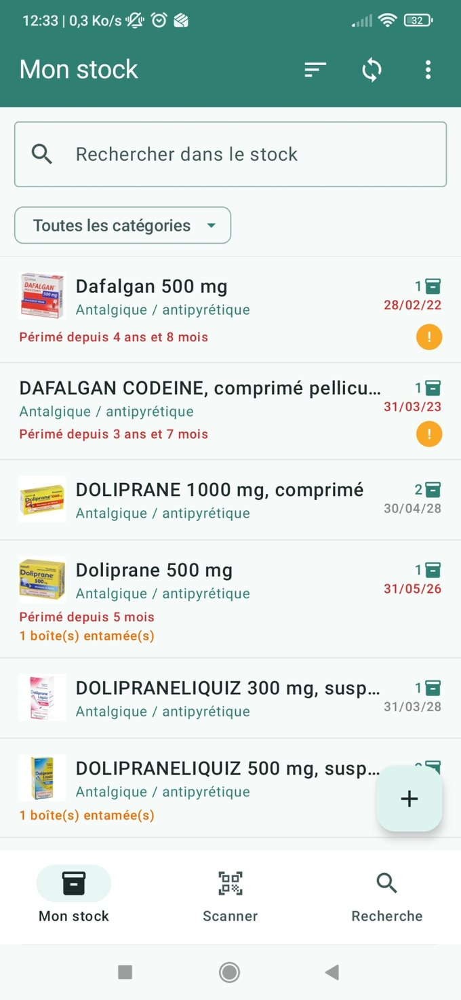
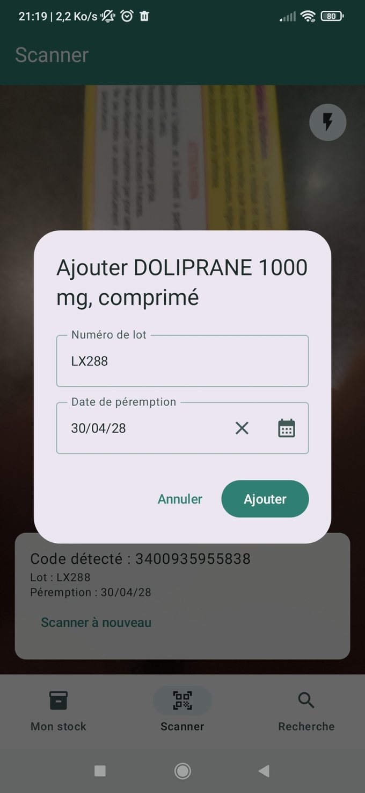
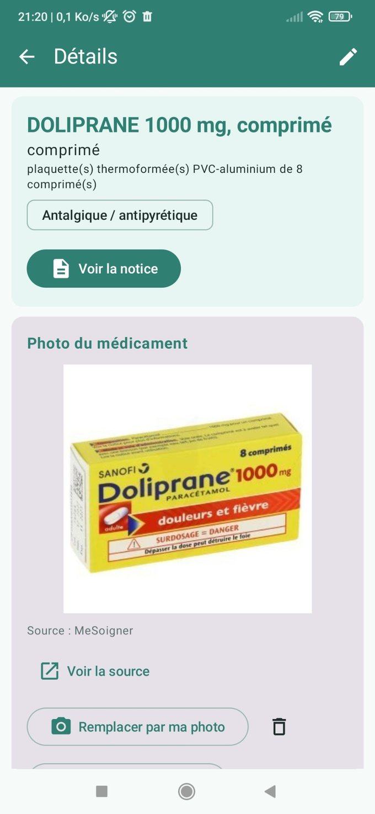
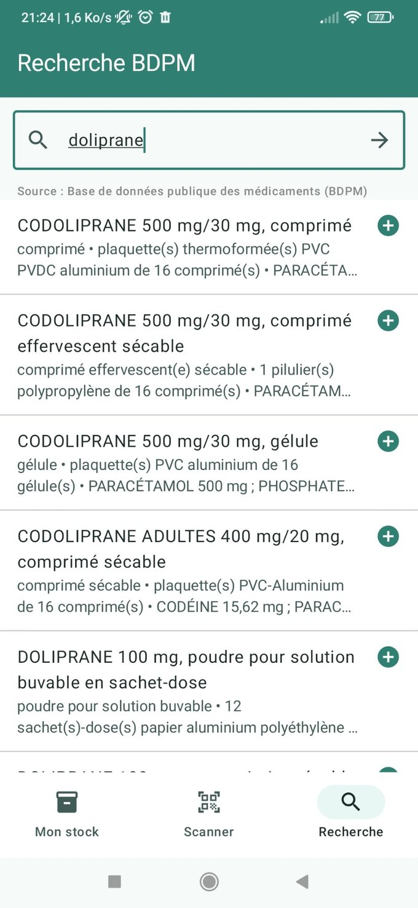
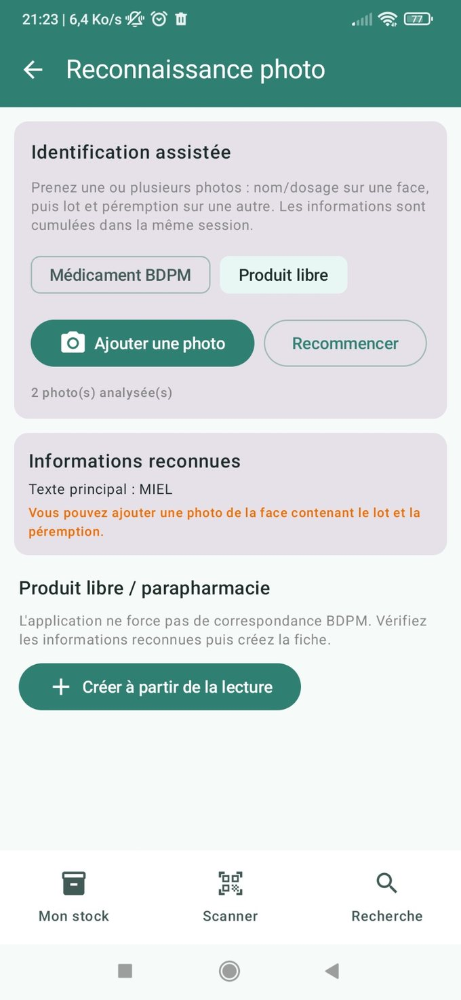

Suivi du stock
Visualisez les boîtes disponibles, entamées et périmées.
Inventoriez vos boîtes, consultez les dates de péremption et retrouvez rapidement les produits disponibles. Avec VIP, partagez votre inventaire familial via votre propre espace Google Drive.

Un aperçu de votre stock, en un regardDe l’ajout d’un médicament à la consultation de son stock : cinq vues réelles de Ma boîte à pharmacie.
Visualisez les boîtes disponibles, entamées et périmées.

Récupérez les informations de lot et de péremption depuis un code 2D.

Accédez aux caractéristiques, à la notice et à la photo du produit.

Retrouvez des médicaments dans la base publique française.

Complétez une fiche avec la reconnaissance photo assistée.
Captures d’une version de test. Les produits affichés servent uniquement d’exemple et ne constituent pas des conseils médicaux.
Enregistrez vos médicaments, les quantités et les dates de péremption de leurs boîtes.
Identifiez un produit à partir de son code-barres, d’un code 2D ou d’une photo, puis vérifiez les informations proposées.
Partagez volontairement un inventaire entre plusieurs appareils via Google Drive, avec les fonctions VIP.
Le propriétaire VIP peut partager son inventaire via Google Drive ; les membres invités n’ont pas besoin d’acheter le VIP pour synchroniser leur stock.
Les informations de votre inventaire sont enregistrées localement. Si vous activez la synchronisation familiale, un fichier est stocké sur Google Drive et partagé avec les personnes que vous autorisez. L’application ne nécessite pas de compte utilisateur propre à l’éditeur.